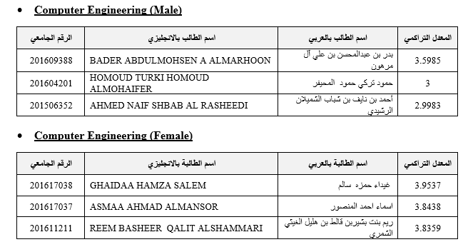
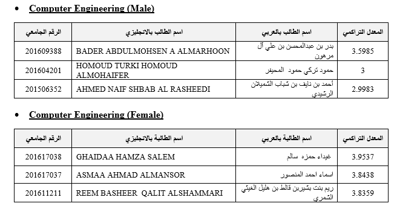

تسعى الوحدة إلى "خدمة الخريجين والتفاعل مع سوق العمل" من خلال دعم التواصل الدائم والفعال مع خريجي الكلية وأرباب العمل واستحداث اليات لتطوير القدرات التنافسية لدى الخريجين وتطوير الشراكة مع سوق العمل (جهات التوظيف) لتوفير فرص العمل المناسبة لهم وتقديم الدراسات اللازمة والخاصة بخريجي الكلية.
تم بحمد الله تعالى عقد حفل تكريم المتفوقين والمتفوقات 2020-2021
وتم في مسرح كلية الحاسب، والذي حضرة وكيل الجامعة الدكتور سعود النايف وعميد الكلية ووكلية الكلية د. شعيع العتيبي واعضاء من
هيئة التدريس بالكلية وحضر من شطر الطلاب عدد 50 طالب ومن شطر الطالبات عدد 50 طالبة.
تم بحمد الله تعالى عقد ورشة ارشادية لخريجي الكلية
بحضور سعادة عميد الكلية الدكتور جلوي الشدوخي, والمشرف العام على توظيف الخريجين الدكتور عبدالله البكر,
ووكيل الكلية للشؤون الأكاديمية الدكتور عبدالعزيز العيباء,ووكيلة الكلية الدكتورة شعيع العتيبي ورؤساء الأقسام وعدد
من أعضاء الهيئة التدريسية والطلبة الخريجين والمتوقع تخرجهم أقامت كلية علوم وهندسة الحاسب متمثلة بوحدة الخريجين لقاء وورشة ارشادية لخريجي الكلية
افتتح اللقاء سعادة عميد كلية علوم وهندسة الحاسب الالي الدكتور جلوي الشدوخي بكلمة عبر فيها مدى اهتمام الكلية بالخريجين حيث
أوصى الخريجين بضرورة التواصل الفعال مع وحدة الخريجين والسعي على تطوير المهارات الشخصية والتأهيلية والوظيفية لديهم.
كما خاطب سعادة مدير وحدة الخريجين الدكتور أمجد قطيش الخريجين بكلمة قدم فيها نظرة شاملة على وحدة الخريجين في الكلية وتشمل
التعريف بالوحدة, الرؤية, الرسالة, الأهداف, المهام, أهم الانجازات التي تم تحقيقيها في الوحدة, وأهم الأنشطة المتوقع تنفيذها خلال العام الأكاديمي الحالي, وطرق التواصل مع الوحدة.
كما قدم سعادة وكيل الكلية للدراسات العليا والبحث العلمي الدكتور ياسر الحربي ورشة عمل للخريجين بعنوان "التوجهات الحديثة في مجال المعلوماتية والدراسات العليا"
حيث تطرق الى التعريف بأهم المجالات التقنية السائدة في العالم والتي يحتاجها سوق العمل وأبرز الشهادات الاحترافية وكيفية الحصول عليها لتطوير السيرة الذانية وزيادة فرص العمل,
كما تم التطرق الى برامج الدراسات العليا المقدمة في الكلية وكيفية الالتحاق بها وشروطها.
ولمساعدة الخريجين في كيفية الحصول على الوظيفة المناسبة, القت منسقة وحدة الخريجين في شطر الطالبات الأستاذة حلى الخصاونة ورشة عمل بعنوان
"الاستعداد الجيد للحصول على الوظيفة المناسبة" حيث تطرقت الى كيفية اعداد سيرة ذاتية احترافية مع ذكر اهم المواقع التي تساعد الخريج على اعداد سيرته الذاتية
احترافية وارشاد الخريجين على طرق البحث عن الوظائف من خلال مواقع التواصل الاجتماعي مثل اللينكدلن والتويتر وبيت.كوم, كما تطرقت الى كيفية اجتياز المقابلة الشخصية.
تم بحمد الله تعالى عقد ملتقي ذا لاين للخريجين والخريجات الأوائل دفعة (1441-1442هــ)
ملتقي ذا لاين للخريجين والخريجات الأوائل دفعة (1441-1442هــ) والمتفوقين والمتفوقات الأوائل للفصل الدراسي الثاني1441-1442هــ
تحت شعار ملتقي ذا لاين، أقامت كلية علوم وهندسة الحاسب الآلي صباح اليو الاربعاء الموافق 16فبراير حفل تكريم للخريجين والخريجات
الأوائل دفعة (1441-1442هــ) والمتفوقين والمتفوقات الأوائل للفصل الدراسي الثاني1441-1442هــ، في مسرح الكلية الحاسب،
والذي حضرة وكيل الجامعة الدكتور سعود النايف وعميد الكلية ووكلية الكلية د. شعيع العتيبي واعضاء من هيئة التدريس بالكلية.
لوحة شرف الخريجين 2020-2021

 

البوم الصور

وحدة الخريجين – مكتب رقم S238
مبنى كلية علوم وهندسة الحاسب
جامعة حائل
حائل، المملكة العربية السعودية
معلومات التواصل
د. أمجد فيصل قطيش – مدير الوحدة ومنسق شطر الطلاب
الهاتف: 0165358200 التحويلة: 1140
البريد الالكتروني: am.qtaish@uoh.edu.sa
واتس اب: 00962791097383
التويتر:
أ. حلا الخصاونة – منسقة شطر الطالبات
الهاتف: 0165358200 التحويلة: 9249
البريد الإلكتروني: h.alkhasoneh@uoh.edu.sa